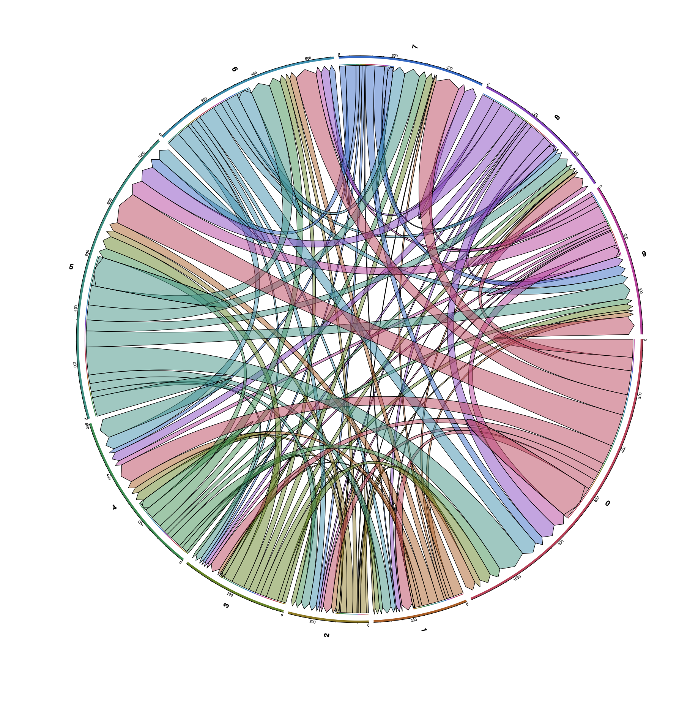

23 Ligand-Receptor analysis
Due to CRAN policies, this function could not make it to the official release and is only available in the development release of SCpubr. Find how to install it here.
Once the package becomes available on CRAN/Bioconductor, the function will be integrated in the official release.
One very interesting analysis that can be carried out is Ligand-Receptor analysis. This allows to compute whether specific clusters interact with each other based on the co-expression of a ligand and its receptor in the respective clusters. The interactions are retrieved from different databases and a plethora of tools have been released to tackle this analysis. One of them is liana, which is a framework that allows to run and integrate the results of several tools, providing a meta-analysis of the co-expression of ligand-receptor pairs. SCpubr makes use of liana and has its analysis and visualization integrated in the SCpubr::do_LigandReceptorPlot() function.
23.1 Basic usage
By default, the user has to run liana on their own and provide the resulting output as input for the function. The following code would produces the object that SCpubr::do_LigandReceptorPlot() expects as input:
liana_output <- liana::liana_wrap(sce = sample,
method = c("natmi", "connectome", "logfc", "sca", "cellphonedb"),
idents_col = NULL,
verbose = FALSE,
assay = "SCT")It is very important to note that liana_output has to contain the five different methods. This is a design choice. The output looks like:
# Ligand Receptor analysis plot.
p <- SCpubr::do_LigandReceptorPlot(liana_output = liana_output)
p
23.2 The basis of the analysis
To give a more complete overview of how the scores retrieved from liana are treated in SCpubr::do_LigandReceptorAnalysis(), here is a short summary:
The output of liana::liana_wrap() is fed to liana::liana_aggregate(), that computes a metric called “aggregate_rank”, which according to the authors, is the metric that can be used for significance.
For the ranks, it’s a bit different. rank_aggregate is simply a probability distribution saying how highly-ranked a given interaction is when aggregating all score vectors - i.e. it’s only indicative of what you have it aggregate.
In the GitHub issue, liana’s developer discuss how different metrics from different tools can be used to measure the significance and magnitude of the interactions. Then, he suggests how to approach the downstream analysis of the aggregated scores:
Really then the user can pick how to best approach the results. 1) You can filter by CellPhoneDB p-value or the aggregate_rank probabilities, 2) Rank interactions by specificity /w NATMI’s edge weights, 3) Use LRscores for magnitude as they are easy to intepret and comparable across datasets.
Following this line of thought, this is what is then implemented in SCpubr::do_LigandReceptorAnalysis():
- Originally, interactions were filtered out using
aggregate_rank <= 0.05, but now this is not applied as we also want to display the non-significant interactions in contrast with the significant ones. If we were to filter them out, the dotplot will only containing statistically significant interactions. This will render the dotplot completely blank. In order to populate it with plot with the rest of interactions, a design choice was made to also include non-significant interactions to get a better sense of the plot by comparing them to the significant ones. - Then, interactions are sorted out by
decresing significance(natmi.edge_specificity column) anddecreasing magnitude(sca.LRscore column). - For plotting, the top N interactions (designated by the user) with the
top_interactions parameterare displayed (thus including, iftop_interactionsis really large, potentially non-significant interactions).
This means that, depending on the number of top interactions retrieved, we might end up with non-significant interactions across any source-target combinations. However, this will be clearly evident in contrast with the top hits. One has also to understand the meaning behind the chosen specificity and magnitude columns used to sort the interactions. For this, individual inspection of the methods used by liana is advisable.
Finally, for the chord diagram plots, different number of interactions are used: - To represent the total number of interactions between source and target, interactions are filtered out using aggregate_rank <= 0.05. The remaining ones are considered significant and therefore included in the diagram. - To represent the total number of interactions between ligand.complex and receptor.complex, the top interactions are used instead. Since this means retreaving the interactions across all possible source/target pairs, like in the output dotplots, they include potential non-significant interactions as well.
23.3 Control how interactions are arranged
This feature will be available in the next CRAN release! (v1.1.0)
The result of liana::liana_aggregate() can be processed in multiple ways:
- By default, the output matrix is already arranged by ascending
aggregate_rank, which acts as a kind of p-value. - The interactions can be arranged by descending
magnitude(how strong is the interaction) orspecificity(how significant is the interaction). - Or both.
In this context, users can decide how the results are arranged in the final plot by providing arrange_interactions_by and one of: aggregate_rank, magnitude, specificity or both.
# Arrange the interactions by aggregate_rank
# Ligand Receptor analysis plot with extra interactions.
p <- SCpubr::do_LigandReceptorPlot(liana_output = liana_output,
arrange_interactions_by = "aggregate_rank",
top_interactions = 10)
p
# Arrange the interactions by specificity
# Ligand Receptor analysis plot with extra interactions.
p <- SCpubr::do_LigandReceptorPlot(liana_output = liana_output,
arrange_interactions_by = "specificity",
top_interactions = 10)
p
# Arrange the interactions by magnitude
# Ligand Receptor analysis plot with extra interactions.
p <- SCpubr::do_LigandReceptorPlot(liana_output = liana_output,
arrange_interactions_by = "magnitude",
top_interactions = 10)
p
# Arrange the interactions by both magnitude and specificity.
# Ligand Receptor analysis plot with extra interactions.
p <- SCpubr::do_LigandReceptorPlot(liana_output = liana_output,
arrange_interactions_by = "both",
top_interactions = 10)
p
23.4 Order interacting pairs alphabetically
This feature will be available in the next CRAN release! (v1.1.0)
By default, the interactions are shown as they are in the original matrix. However, we can also order them alphabetically by using sort_interactions_alphabetically = TRUE:
# Arrange the interactions alphabetically.
# Ligand Receptor analysis plot with extra interactions.
p <- SCpubr::do_LigandReceptorPlot(liana_output = liana_output,
sort_interactions_alphabetically = TRUE,
top_interactions = 10)
p
23.5 Increase the top significant interactions plotted
By default, top 25 unique, most significant interactions are retrieved and plotted. However, this can be changed by using top_interactions. Also, clusters that have no interactions, both as source and target, will be removed.:
# Ligand Receptor analysis plot with extra interactions.
p <- SCpubr::do_LigandReceptorPlot(liana_output = liana_output,
top_interactions = 50)
p
23.6 Add or remove missing source-target combinations
Depending on the value we select for top_interactions, we might find out that there are specific source-target combinations for which we have no interactions at all. These show up in the resulting dotplot as empty columns. This is a design choice, as SCpubr brings these combinations back as NA values, thus making the different panels in the dotplot easier to read. However, with a small number of interactions, this might result in a very empty dotplot. Also, if we have many different sources, the plot can also become very long.
In cases like these, we might rather go for only the relevant columns. We can toggle on/off this behaviour by using add_missing_LR_combinations = TRUE/FALSE:
# Add missing LR combinations.
p1 <- SCpubr::do_LigandReceptorPlot(liana_output = liana_output,
add_missing_LR_combinations = TRUE)
# Restrict the results to only the LR combinations that have a value.
p2 <- SCpubr::do_LigandReceptorPlot(liana_output = liana_output,
add_missing_LR_combinations = FALSE)
p <- p1 /p2
p
23.7 Modify the size of dots
Size of dots can be modified with dot.size:
# Ligand Receptor analysis plot with increased dot size.
p <- SCpubr::do_LigandReceptorPlot(liana_output = liana_output,
dot.size = 2)
p
23.8 Toggle grid lines
One can also draw some grid lines. This is specially useful when the plot gets too big. This can be achieved by using plot.grid = TRUE/FALSE. The grid lines can be controlled using grid.type and the color with grid.color:
# Ligand Receptor analysis plot with grid.
p <- SCpubr::do_LigandReceptorPlot(liana_output = liana_output,
grid.color = "steelblue")
p
23.9 Invert axis
For the cases in which one want to plot a lot of interactions, the plot can be flipped with flip = TRUE. X axis labels can be rotated with rotate_x_axis_labels, providing either 0, 45 or 90 degrees and strip text can be also rotated with rotate_strip_text = TRUE.
# Ligand Receptor analysis plot with inverted axes.
p <- SCpubr::do_LigandReceptorPlot(liana_output = liana_output,
flip = TRUE,
rotate_x_axis_labels = 90,
rotate_strip_text = TRUE)
p
23.10 Split the plot by ligand or receptor complex
Furthermore, the plot can be also further divided by grouping the interactions by common ligand or receptor complex. This can be achieved using split.by parameter.:
# Ligand Receptor analysis plot grouped by ligand.complex.
p <- SCpubr::do_LigandReceptorPlot(liana_output = liana_output,
plot.grid = TRUE,
grid.color = "grey90",
grid.type = "dotted",
rotate_x_axis_labels = 90,
rotate_strip_text = TRUE,
split.by = "ligand.complex")
p
# Ligand Receptor analysis plot grouped by ligand.complex.
p <- SCpubr::do_LigandReceptorPlot(liana_output = liana_output,
split.by = "receptor.complex")
p
23.11 Restrict the plot to given source and/or targets
Finally, one can also restrict the output to given source and target clusters. This can be achieved by provided the desired identities to keep_source and keep_target:
# Ligand Receptor analysis plot with inverted axes with filtered source and targets.
p <- SCpubr::do_LigandReceptorPlot(liana_output = liana_output,
flip = FALSE,
keep_source = c("0", "3", "9"),
keep_target = c("3", "4", "9"))
p
23.12 Compute chord diagrams of the interactions
Another supplementary visualizations that one can do with the results of liana is to visualize: - The total number of significant interactions between each pair of clusters. - The number of interactions between the top_interactions ligand-receptor pairs.
This can be achieved by providing compute_ChordDiagrams = TRUE. This will return a list with the dot plot and chord diagrams.
# Chord diagram of the total significant interactions from each cluster and all the rest.
out <- SCpubr::do_LigandReceptorPlot(liana_output = liana_output,
top_interactions = 25,
compute_ChordDiagrams = TRUE)
out$chord_total_interactions
# Chord diagram of the total ligand-receptor interactions from each cluster and all the rest.
out$chord_ligand_receptor
However, the plot can become quite messy. For this, it becomes more interesting to use in combination of keep_source or keep_target parameters:
# Chord diagram of the total significant interactions from each cluster and all the rest.
out <- SCpubr::do_LigandReceptorPlot(liana_output = liana_output,
top_interactions = 25,
keep_source = c("0", "7"),
compute_ChordDiagrams = TRUE)
out$chord_total_interactions
# Chord diagram of the total ligand-receptor interactions from each cluster and all the rest.
out$chord_ligand_receptor
23.13 Avoid generating a omnipath-log folder
If this folder appears in your tree structure, consider applying the hotfix stated here.